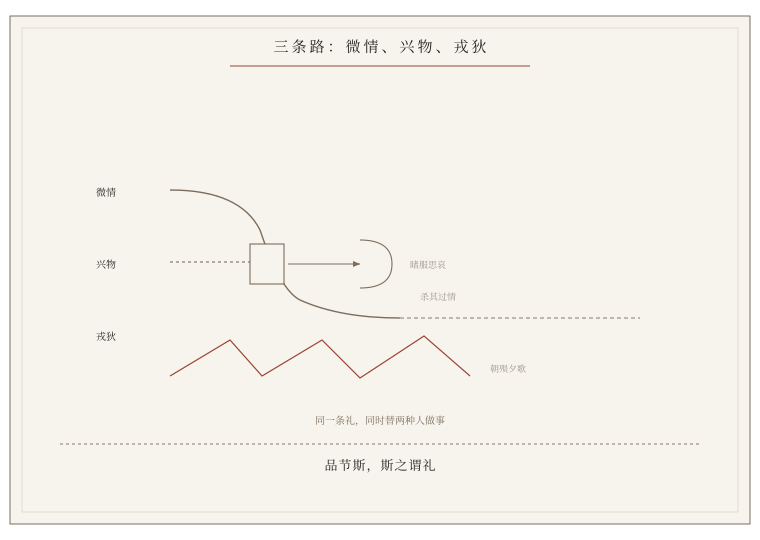

檀弓下 · 四·四十四 · 第 369 课
有子与子游立，见孺子慕者。有子谓子游曰：「予壹不知夫丧之踊也，予欲去之久矣。情在于斯，其是也夫！」子游曰：「礼有微情者，有以故兴物者，有直情而径行者，戎狄之道也。礼道则不然。人喜则斯陶，陶斯咏，咏斯犹，犹斯舞，舞斯愠，愠斯戚，戚斯叹，叹斯辟，辟斯踊矣。品节斯，斯之谓礼。人死，斯恶之矣；无能也，斯倍之矣。是故制绞衾，设蒌翣，为使人勿恶也。始死，脯醢之奠；将行，遣而行之；既葬而食之。未有见其飨之者也。自上世以来，未之有舍也，为使人勿倍也。故子之所刺于礼者，亦非礼之訾也。」
说什么事：有子与子游站在一起，见一个小孩思念亲人而号哭。有子说：「我始终不懂丧礼的踊，想去掉它已经很久了。真情就在这里——像这样不就好了吗？」子游答：礼有「微情」的一路，有「兴物」的一路，也有「直情径行」的一路，那是戎狄之道。礼不然。人喜则郁陶，郁陶则歌咏，歌咏则摇身，摇身则舞蹈；舞到极处则愠，愠则愤恚，愤恚则叹息，叹息则抚心，抚心则踊跳。把这些都分出阶来、定出节来，这才叫礼。人死，人就厌它；不能做事了，人就背它。所以制绞衾、设蒌翣，是使人不要厌；始死设脯醢之奠，将葬设遣奠而送之，既葬又设祭而食之——从没有人见过死者真的来享用。然而自上古以来，从没有废止过，是使人不要背。所以你讥刺的那些，并不是礼的病。
落在哪一层：以「节」量礼。论礼不是要人不真，是不许人只有真。
为何编在此位：上节论一件亵衣之陈，此节把「礼之所以为礼」整篇说出。前为细目，此为总纲。
【经】有子與子游立，見孺子慕者。有子謂子游曰：「予壹不知夫喪之踊也，予欲去之久矣。情在於斯，其是也夫！」子游曰：「禮有微情者，有以故興物者，有直情而徑行者，戎狄之道也。禮道則不然。人喜則斯陶，陶斯詠，詠斯猶，猶斯舞，舞斯慍，慍斯戚，戚斯歎，歎斯辟，辟斯踊矣。品節斯，斯之謂禮。人死，斯惡之矣；無能也，斯倍之矣。是故制絞衾，設蔞翣，為使人勿惡也。始死，脯醢之奠；將行，遣而行之；既葬而食之。未有見其饗之者也。自上世以來，未之有舍也，為使人勿倍也。故子之所剌於禮者，亦非禮之訾也。」
【注】喪之踊，猶孺子之號慕。／微，殺也。／興，起也。物謂衰絰也。／陶，鬱陶也。詠，謳也。猶當為搖，聲之誤也。秦人猶、搖聲相近。／舞，手舞之。／慍，怒也。／戚，憤恚。／歎，吟息。／辟，拊心。／踊，躍。／品，階格也。節，制斷也。／無能，心謂之無所復能。／絞衾，尸之飾。蔞翣，棺之牆飾。《周禮》蔞作柳。／食，反虞之祭。／舍猶廢也。訾，病也。
【疏】「微情」者，微，杀也。言若贤者丧亲，必致灭性，故制使三日而食、哭踊有数，以杀其内情，使之俯就也。何胤云：「哭踊之情，必发于内。谓之微，微者，不见也。」／「有以故兴物」者，兴，起也，物谓衰绖也。若不肖之属，本无哀情，故为衰绖，使其睹服思哀，起情企及也。引由外来，故云「兴物」也。然衰绖之用，一则为孝子至痛之饰，二则使不肖之人企及。／「有直情而径行者，戎狄之道也」，谓直肆己情而径行之也，无哭踊节制，乃是戎狄之道。／「品节斯，斯之谓礼」者，品，阶格也；节，制断也。若喜而不节，自陶至舞，俄顷而愠生；若怒而不节，从戚至踊，踊极则笑。故夷狄无礼，朝殒夕歌，童儿任情，倏啼欻笑。今若品节此二涂，使踊舞有数，有数则久长，故云「此之谓礼」。／如郑此《礼》本云「舞斯愠」者，凡有九句，首末各四，正明哀乐相对；中央「舞斯愠」一句，是哀乐相生。而郑诸本亦有无「舞斯愠」一句者，取义不同。而郑又一本云「舞斯蹈，蹈斯愠」，益于一句，凡有十句，当是后人所加耳。而卢《礼》本亦有「舞斯愠」之一句；而王《礼》本又长云「人喜则斯循，循斯陶」，既与卢、郑不同，亦当新足耳。／「人死斯恶之矣」者，以人身既死，形体腐败，故恶之，故倍之。以其恐恶之，故制绞衿衾、设蒌翣以饰之，故使人勿恶也；以其恐倍之，故始死设脯醢之奠，以至于葬，将行之，又设遣奠而行送之，既葬反哭，设虞祭以食之。虽设奠祭，未曾见其死者而飨食之也。既不飨食，自上世以来，未之有舍此奠祭而不为者也，所以设奠祭者，为使人勿倍其亲故也。／「故子之所讥剌于礼有踊节者，亦非礼之病害也」，言哭踊有节，正是礼之所宜，非礼之病。
孺子慕 小儿思慕其亲而号哭。慕，思也。
壹 专一、始终。注疏作「专壹不知」。
踊 跳踊。哭时以足顿地，有其数。
微情 微，杀也，减损。谓以礼杀其过情。
兴物 兴，起也；物，衰绖之类。谓借外物唤起内情。
直情而径行 任情直行，不加节制。
戎狄之道 夷狄之道。此借以指无节之状。
陶 郁陶，心初悦而未畅。
咏 讴歌。
犹 注「当为摇」，摇动身体。
愠 怒。
戚 愤恚。
辟 拊心，抚胸。
品节 品，阶格；节，制断。谓分其阶、定其节。
绞衾 绞，束尸之带；衾，覆尸之被。注「尸之饰」。
蒌翣 棺之墙饰。翣，形如扇的棺饰。
倍 背弃。
訾 病也。非礼之訾，谓不是礼的病。
有子与子游站在一起，见一个孩子思念亲人而号哭。有子说：「我始终不懂丧礼的踊，想去掉它已经很久了。真情就在这里，像这样不就好了？」子游说：「礼有减损过情的一路，有借外物起情的一路，也有任情直行的一路，那是戎狄之道。礼不然。人喜则郁陶，郁陶则歌咏，歌咏则摇身，摇身则舞蹈；舞到极处便生愠，愠则愤恚，愤恚则叹息，叹息则抚心，抚心则踊跳。把这些分出阶、定出节，这才叫礼。人死，人就厌它；不能再做事，人就背它。所以制绞衾、设蒌翣，是使人不要厌；始死设脯醢之奠，将葬设遣奠送之，既葬设祭而食之——从没有人见死者真来享用。然而自古至今从未废止，是使人不要背。所以你讥刺的，并不是礼的病。」
此章是全卷最长的一篇议论，所答只一问：踊可不可以去掉？
有子的依据是「真情」：孺子号哭，无节而动人。 子游的依据是「有节」：无节的哀，不能久。
全篇分三段：先说礼的三种路，再说哀乐之必至其极，最后说饰与奠之所以设。
第一层 有子之问：以「真」废「节」 有子的论证极有力：一个孩子哭得毫无节制，而人人动容；丧礼的踊，数着次数跳，岂不反不如他？
此问今日仍在：一切「真诚崇拜」都是以这个论证起头的——凡是形式，皆疑其伪。
第二层 微情：礼替强者减 子游的第一条路是「微情」。疏云「若贤者丧亲，必致灭性，故制使三日而食、哭踊有数，以杀其内情，使之俯就」。
至情之人，若不加节，会伤心至死。故礼先替他减。
这一条路的对象不是无情者，是至情者。 礼在此不是压制，是保护。
第三层 兴物：礼替弱者起 第二条路是「兴物」。「若不肖之属，本无哀情，故为衰绖，使其睹服思哀，起情企及」。
哀薄之人，穿上衰绖，看见自己这身衣服，心里那一点才被唤起。
故衰绖有两用：一是至痛之饰，二是使不肖者企及。同一条礼，同时替两种人做事。
第四层 第三条路：直情径行 第三条是「直情而径行」，即任情直行，无哭踊之节。子游断之曰「戎狄之道」。
此断极重。「戎狄」在此不是骂人，是断其「不能久」：疏云「夷狄无礼，朝殒夕歌；童儿任情，倏啼欻笑」。
无节之哀，其发也暴，其竭也速。 这不是道德问题，是可持续的问题。
第五层 九句：哀乐同构，乐极生愠 自「喜斯陶」至「辟斯踊」，共九句。疏云「首末各四，正明哀乐相对；中央『舞斯愠』一句，是哀乐相生」。
喜之极是舞，舞之极则愠；哀之极是踊，踊之极则笑。
此一段最见古人眼力：他们不把哀乐当两极，而当一条可以走到尽头的路；走到了尽头，就会翻面。
故「品节」不是修剪，是不让人走到翻面那一步。
第六层 恶与倍：礼为死者做的两件事 「人死，斯恶之矣；无能也，斯倍之矣。」
恶，是厌其形；倍，是背其无能。此二者是丧礼全部设施所对。
故制绞衾、设蒌翣，为使人勿恶；设脯醢之奠、遣奠、虞祭，为使人勿倍。
而「未有见其飨之者也」一句最诚实：从没有人见过死者来吃。明知不飨，而自上古以来不废——因为礼在这里要的不是交换，是不背。
第七层 訾：什么叫「礼的病」 结句「子之所刺于礼者，亦非礼之訾也」。
訾，病也。子游说：你所讥的，并不是礼的病。
礼可以有病，但「有节」不是病；「有节」正是礼之所以为礼。
与今日何干 今人论仪式，多在两极：或斥为形式主义，或奉为不可改。此章给第三条路：礼之节，同时替「太过的」和「不足的」做事；改革者若只见其一，必伤其二。
| 左 | 右 |
|---|---|
| 孺子慕 | 无节而真 |
| 踊 | 有数而节 |
| 微情 | 杀过情，护至情者 |
| 兴物 | 起薄情，借衰绖 |
| 直情径行 | 戎狄之道，不能久 |
| 陶咏摇舞 | 喜之四阶 |
| 愠戚叹辟踊 | 哀之五阶 |
| 品节 | 分阶定节，斯之谓礼 |
| 绞衾蒌翣 | 使人勿恶 |
| 奠遣虞 | 使人勿倍，不为飨 |
画一个孩童的背影，独自站在一处空地上，双肩耸动，作号哭之状（只画背影与肩线，不画面部）。孩童前方远处，画一座门，门内一盏灯。画面右侧另画一段有刻度的横尺，尺上分作九小格，格线依次递密。孩童与尺之间不画连线。赭色只用在那段横尺的第九格。
